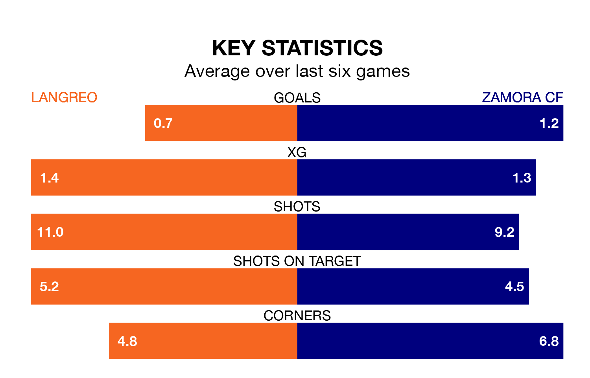

Zamora CF travel to the Estadio Nuevo Ganzábal for Sunday's early match against Langreo looking to bounce back from defeat last time out in the Segunda División RFEF Group 1.
Zamora, who sit third in the league after 32 games, fell to a 2-0 away defeat to Club Marino de Luanco on April 21.
They face a Langreo side who also lost their last match, a 2-0 defeat to Real Valladolid B, and who sit fifth in the table.
With 29 goals in 32 games so far this season, Langreo are scoring at below the league average rate with 0.9 goals per game. And they are conceding at an average rate, letting in 38 goals at a rate of 1.2 per game.
Zamora, meanwhile, are average scorers, with 1.2 goals per game. They have conceded 0.6 goals per game.
In the last three years, Langreo and Zamora have played each other on three occasions. Zamora won one of them and they drew the other.
Their last meeting was on December 16, when they played out a 1-1 draw.
The hosts are in reasonable form in the Segunda División RFEF Group 1, with three wins and two draws from their last six games.
With two wins and three draws over that period, the away side's form is slightly worse – they have taken nine points from 18, compared to Langreo's 11.
Updated: 07:59 (UTC), 26/04/24